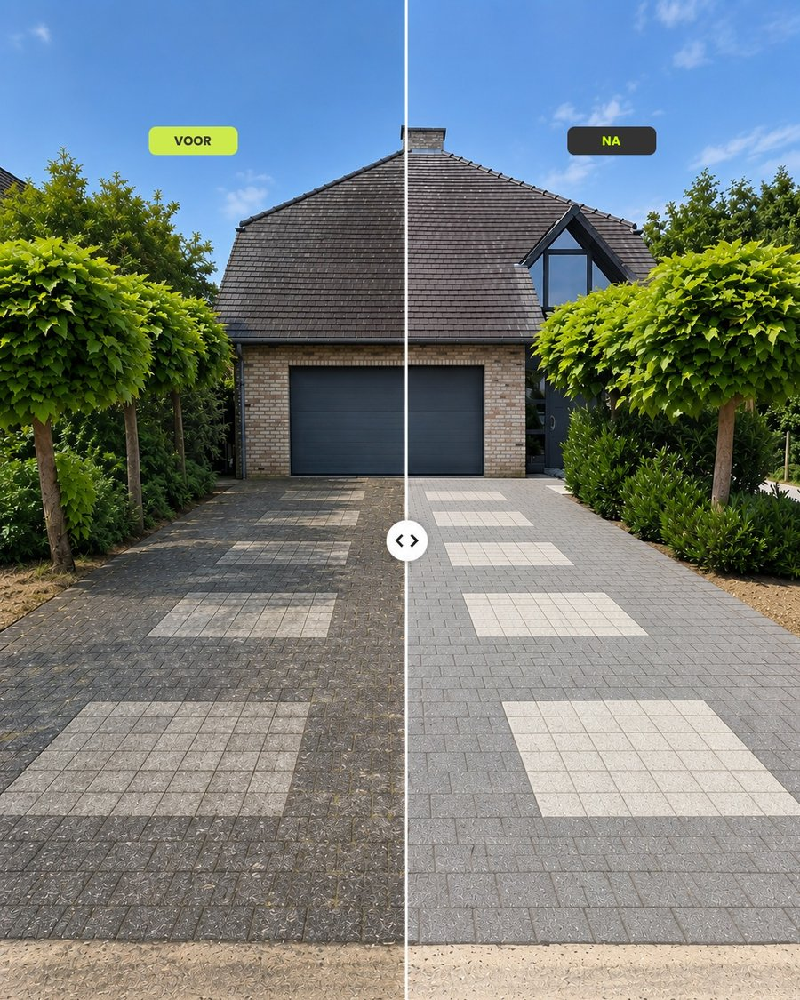

Oprit reinigen in Limburg
Klinkers en beton grondig gereinigd van mos, vuil en aanslag, zonder schade aan het oppervlak.
Vraag een offerte aan
Je oprit weer als nieuw
Een oprit krijgt het hard te verduren: regen, bladeren, banden en schaduw zorgen ervoor dat klinkers en beton na een paar jaar groen, glad en vlekkerig worden. Met een professionele hogedrukreiniging halen we dat vuil weg en ziet je oprit er weer verzorgd uit.
Wat we aanpakken
- Mos en groene aanslag op klinkers en beton
- Vastgekoekt vuil en zwarte aanslag
- Onkruid en vuil tussen de voegen
- Gladde plekken die bij regen gevaarlijk worden
Aangepast aan je ondergrond
Niet elke oprit is hetzelfde. Bij het gratis plaatsbezoek bekijken we het type klinker of beton en de staat van de voegen, en stemmen we de druk en werkwijze daarop af. Zo wordt je oprit proper zonder het oppervlak te beschadigen.

Zo werkt het
Contact opnemen
Stuur ons je aanvraag via het formulier, telefoon of WhatsApp.
Gratis plaatsbezoek & offerte
We bekijken je oprit ter plaatse en bezorgen een duidelijke, vrijblijvende offerte.
Professionele reiniging
We reinigen je oprit vakkundig en leveren een proper resultaat af.
Veelgestelde vragen
Hoe vaak moet je een oprit laten reinigen?
Dat hangt af van de ligging. Een oprit in de schaduw of onder bomen wordt sneller groen dan een oprit in de volle zon. Veel mensen laten hun oprit om de één à twee jaar reinigen.
Beschadigt hogedruk mijn klinkers?
Niet als het vakkundig gebeurt. We stemmen de druk af op het materiaal en werken met de juiste afstand en techniek, zodat het vuil verdwijnt en je klinkers of beton intact blijven.
Wat gebeurt er met de voegen?
Bij het reinigen komt ook het vuil en onkruid tussen de voegen los. Bij het plaatsbezoek bekijken we de voegen samen met jou en bespreken we wat er nodig is.
Wat kost het reinigen van een oprit?
De prijs hangt af van de oppervlakte, het materiaal en hoe vervuild de oprit is. Na het gratis plaatsbezoek krijg je een duidelijke offerte zonder verborgen kosten.
Offerte voor je oprit
Vul het formulier in of neem rechtstreeks contact op. We antwoorden zo snel mogelijk.